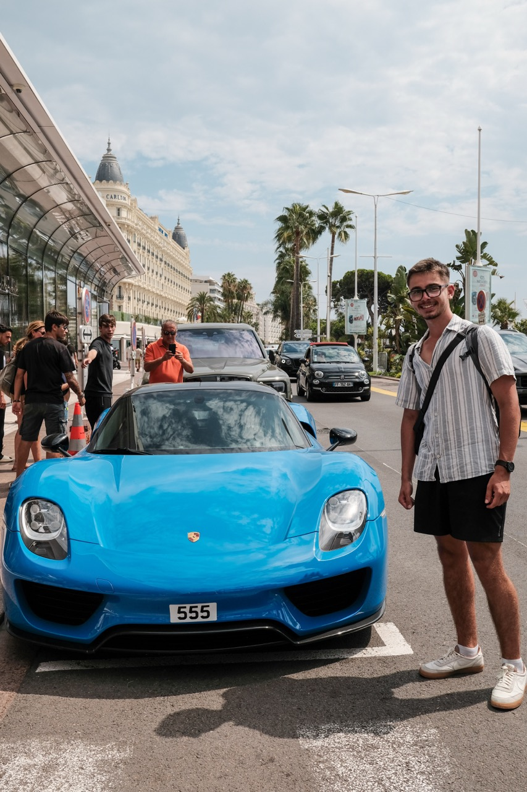
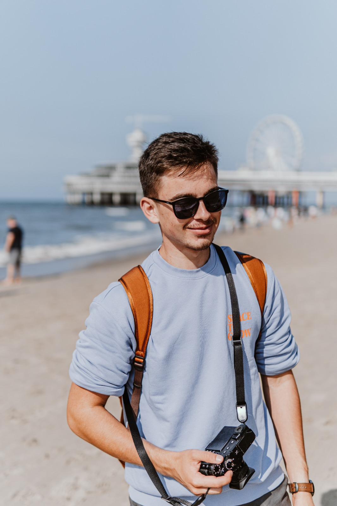
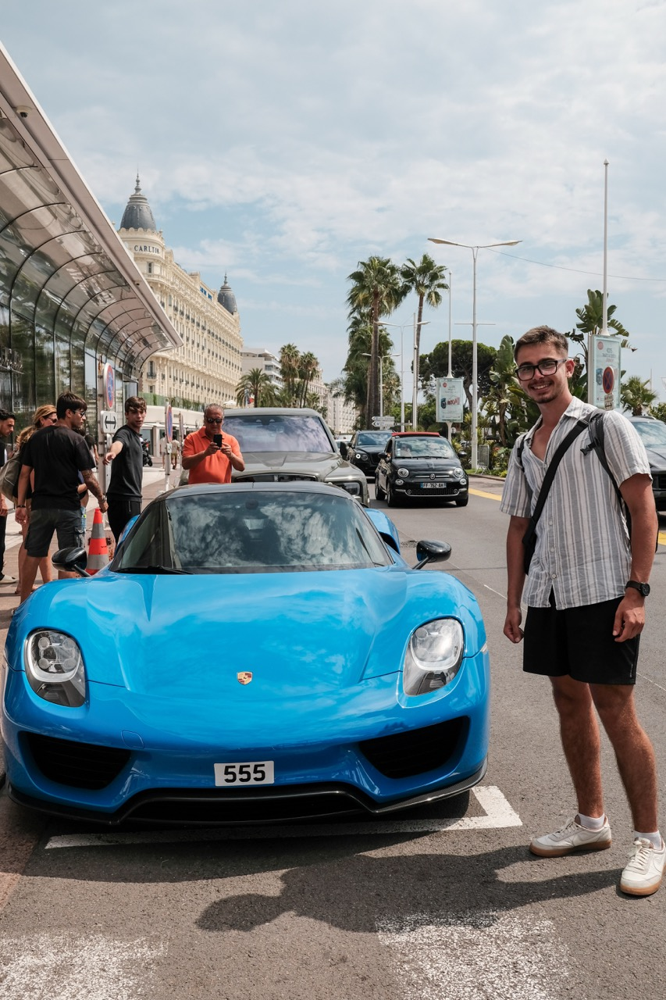
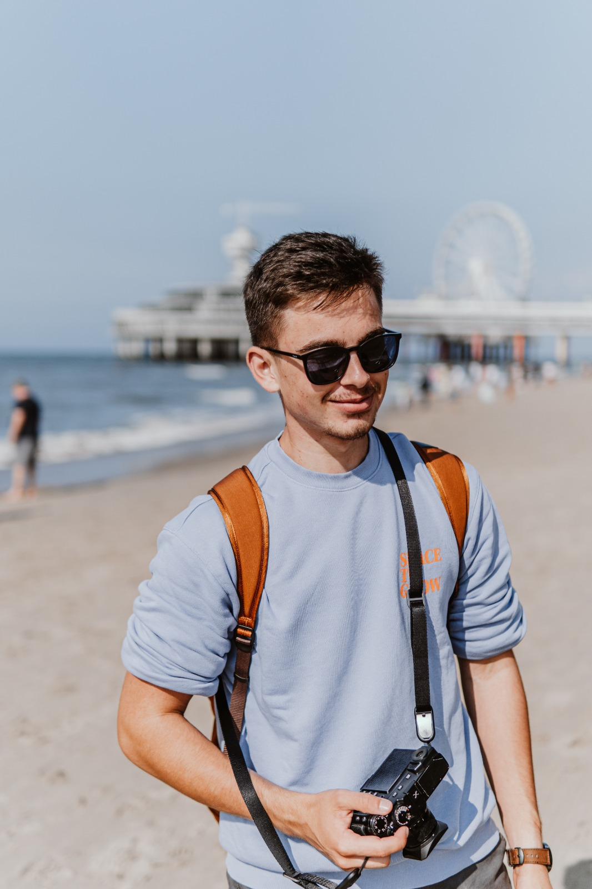

My Story
I’m a creative with a deep passion for photography and visual storytelling, with a particular love for cars and travel. I’m all about capturing moments that tell a story—whether it’s the sleek curves of a Porsche against an open road or the vibrant energy of city streets. I don’t just take pictures; I bring ideas to life through my camera, always aiming to create fresh, engaging content that resonates with others.
Currently, I’m diving into my Creative Business studies at Breda University of Applied Sciences in the Netherlands, where I’m combining my creative side with the business skills needed to make an impact in the industry. Before all this, I spent my time at Tatranská Akadémia in Slovakia, studying Information and Communication Technology (ICT). This background gives me a solid technical foundation, which I love to blend with my artistic work, allowing me to approach projects from a unique perspective.
Since 2022, I’ve been working as a freelance photographer and videographer, with a focus on automotive, street, and travel photography. I’ve traveled for professional shoots, like working on a building photoshoot for a construction company, and I’m always pushing myself to develop new content for social media and my personal brand. Instagram has become my go-to platform for showcasing my work, especially through behind-the-scenes POV shots and car-centric content that gives people a peek into my creative process. It’s been a great way to build a personal brand while sharing what I’m passionate about.
On the side, I’ve taken on creative roles in school projects. As the Director of Photography (DOP) for various short films, documentaries, and TV concepts, I’ve had the chance to lead visual direction, collaborate with talented teams, and even take on partial directing responsibilities. Right now, I’m working on two exciting TV show concepts that focus on cars, adventure, and extreme activities—projects that are allowing me to explore new aspects of visual storytelling.
Another standout project for me was my high school graduation project, where I designed and built a fully functional e-commerce website. From front-end to back-end, I created an intuitive, user-friendly experience that helped me get hands-on with web development and UX/UI design. It’s one of those projects that really showed me how important it is to blend creativity with technical skills.
In between my freelance work and school, I’m also employed at Jumbo supermarket, where I’ve gained real-world experience in customer service, teamwork, and managing time effectively. Working in a fast-paced environment has taught me how to stay organized and efficient, which definitely comes in handy when balancing multiple creative projects.
At the end of the day, I’m all about growth—whether it’s learning new techniques, working on innovative projects, or collaborating with like-minded individuals. I’m always looking for fresh opportunities to push my creative boundaries, and I’m excited to see where this journey takes me.